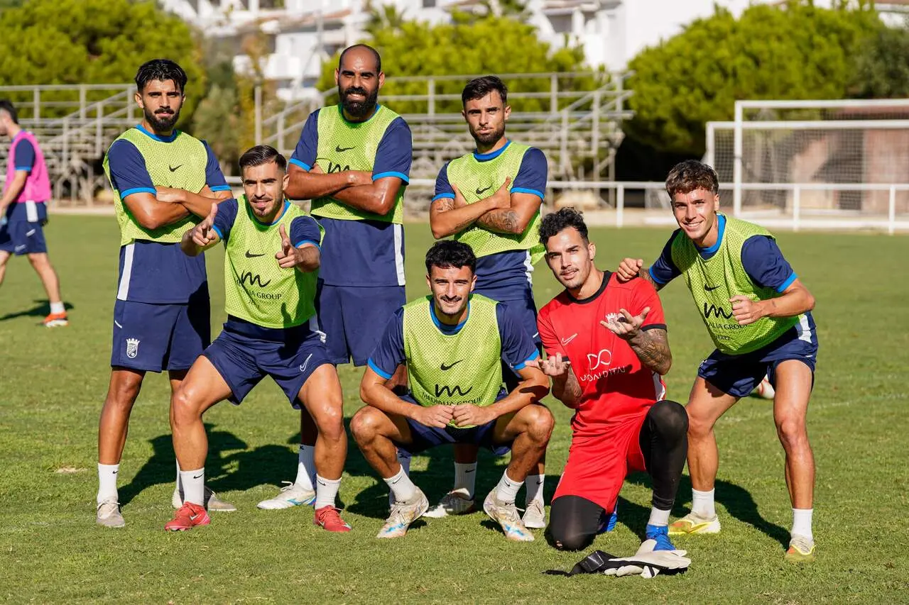

Four pitches in one week: a challenge for Xerez CD's planning

Photo: Diario XerecistaThis week Xerez CD are alternating between the Chapín annex pitch, Chapín, Costa Ballena and San Telmo. Keeping to a routine in a changing environment demands extra effort from the coaching staff and the squad.
Training at four different venues in barely seven days is a situation that requires constant adaptation. The Chapín annex pitch, Chapín itself, Costa Ballena and San Telmo make up a map of work that the coaching staff must manage carefully, because each pitch has its own characteristics and can affect the team's preparation. The reason is a lack of availability: the irrigation system at the Pedro Garrido is being repaired, which forces the team to keep changing facilities throughout the week.
Different surfaces, different sensations
Each venue has its own grass, firmness and drainage. Muscles and joints respond differently depending on the surface, so moving from one pitch to another in a few days requires a period of adjustment from the players. Fitness coaches tend to prefer familiar settings in order to adjust training loads more precisely, especially in the most intense sessions.
Planning that adapts on the fly
Physical preparation relies on continuity and progression. When the setting changes, spaces, schedules and exercises have to be readjusted according to what each facility allows. It is a task the coaching staff can handle with experience and flexibility, but it demands more attention and more time spent on organisation.
All of this with an eye on Sunday 18 October, when Xerez CD host Ciudad de Lucena at Chapín at 19:00.
🇪🇸 Leer en español ← Back to home